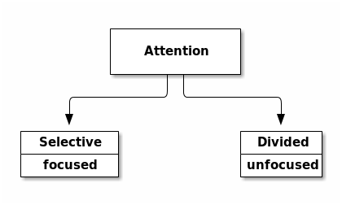
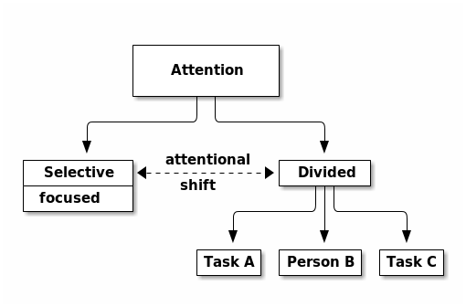
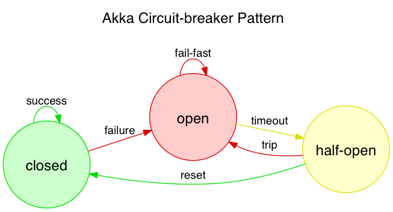

The Ultimate Productivity Tool
Demos!
Key theme: I often run ls to remember what I'm doing
ls and sl
- show ls operation, ls -l, ls -ldh ~
- very useful
- often find myself typing it when I return to a task and need to know where I am/what I'm doing
- my goto 'what am i doing' tool
- sl has similar arguments to ls
- Difference is… it shows a train
- Can't ctrl-c it
- Have to sit and watch and think about what you did
Why did I just type sl instead of ls?
- You forgot that
lisn'ts - You don't know where the keys are and you took a guess
- You tried to do it too fast
- You're not paying attention
- You're trying to do too much at once
Cognitive Science
Hard field, easy fundamentals
key theme: - divided attention is no good for coding
- Attention is categorised
- Attention is limited
- One model: attention pools, for different domains
Cognitive Science
Hard field, easy fundamentals
- Attention is categorised
- Attention is limited
- Multitasking is impossible
Cognitive Science: how we think Attention is categorised – different categories are suited to different purposes Attention is limited – but it's not like a simple gauge that runs out behave like resource pools "sharded" by function.
Attention can be categorised

Selective attention is deeply focused, when all your resources are used for one thing [Divided] attention necessary for multi-tasking* and dealing with more than one thing at once We're actually really bad at multi-tasking, and in a study those who rated themselves good at it did worse
Attention is limited, but can be shifted

Circumstances often force us to divide our attention, but with effort we can shift it back. We can learn techniques to make this easier We should know when we have selective attention on the task at hand.
Multi-tasking is impossible
- We have attention pools
- They shard by brain function
- Experts need less from that pool
- No one can multitask
Attention as resource - we have finite attention pools sharded by function e.g. hopping up and down doesn't affect your ability to remember the national anthem talking on the phone does affect your ability to write a poem we can only do two things at once if we're really good at one of them We are expert typers This is why you can generally type without paying attention, but you can't code without paying attention
What is this?

Electrical circuit breakers
When current crosses a threshold, the circuit is broken and current goes to 0.
Software circuit breakers

When (e.g.) a remote system is responding slowly this layer fails fast, and recovers slowly So that overall system timing doesn't grow to the timeout time. We use this technique in our services and in communicating with new services from dashboard (in conjunction with DL)
In general terms
A circuit breaker turns a sub-optimal situation into a broken one, demanding intervention
sl is a circuit breaker for divided attention
sl shows you when your attention is so depleted you can't even ls any more.
And when it is time to stop what you are doing and go get a coffee.
How it works
- …
How it works
- I have that meeting in 5 minutes
How it works
- I have that meeting in 5 minutes
- PLAT-327: I'll start on the model first
How it works
- I have that meeting in 5 minutes
- PLAT-327: I'll start on the model first
- I should check why that load is so high
How it works
- I have that meeting in 5 minutes
- PLAT-327: I'll start on the model first
- I should check why that load is so high
- Ha, Luke got another haircut
How it works
- I have that meeting in 5 minutes
- PLAT-327: I'll start on the model first
- I should check why that load is so high
- Ha, Luke got another haircut
- what was I doing?
How it works
- I have that meeting in 5 minutes
- PLAT-327: I'll start on the model first
- I should check why that load is so high
- Ha, Luke got another haircut
- what was I doing?
CHOO CHOO!
Why is selective attention important?
- Study shows..
- In memory recognition task
- 80% success sequential completion
- 60% success with divided attention
- Anecdotally, we've all seen careless mistakes
….But I wouldn't recommend it for ops
- You forgot that
lisn'ts - You don't know where the keys are and you took a guess
- You tried to do it too fast
- You're not paying attention
- You're trying to do too much at once
- The server has died and you are the first responder
I'm sold!
brew install slbrew install gti- (if you
git statusto remember what you're doing)
- (if you
- please don't install on servers
Questions?
Thanks for shifting your selective attention!